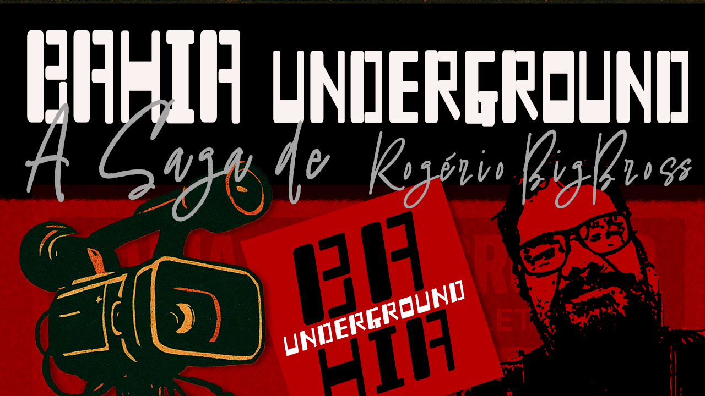

Bahia Underground — The Saga of Rogério BigBross The living memory of a scene that never asked for permission to exist.
Feature Documentary | Brazil | 2026The Story
A portrait of Salvador’s underground music scene, told through the trajectory of cultural producer Rogério BigBross.
Through archival concert footage, historical music videos, and present-day interviews, Bahia Underground — The Saga of Rogério BigBross traces the evolution of Salvador’s DIY music scene through the perspective of cultural producer Rogério BigBross, a key figure in its continuity.
Emerging outside institutional structures and driven by independence, collaboration, and resistance, this underground movement shaped a cultural ecosystem built on autonomy and persistence.
More than a portrait of an individual, the film reveals a collective history — one forged through sound, urgency, and the need to create — offering a rare insight into a scene that continues to transform itself over time.
Nêio Mustafa
Nêio Mustafa is a Brazilian documentary filmmaker, multimedia artist, and creative director with over a decade of experience across audiovisual, design, and digital media. His work explores cultural identity, perception, and the dynamics of collective creation.
I am drawn to stories that exist at the margins of visibility — cultural movements and individuals who persist beyond institutional recognition.
A Scene Built on Autonomy and Resistance

More than a biography, the film captures the cultural resistance of an underground scene that has played a vital role in shaping Salvador’s independent music landscape.
Emerging outside institutional structures, this movement is driven by autonomy, persistence, and collective creation — forming a cultural ecosystem that continues to evolve through self-organization and artistic urgency.
I am drawn to stories that emerge outside institutional visibility — cultural movements and individuals who persist through autonomy, urgency, and the need to create. In Bahia Underground, this impulse takes shape through a scene that never asked for permission to exist, but continues to redefine itself across generations.
Film Stills


{kind=link}
{kind=link}
{kind=link}
{kind=link}
{kind=link}
{kind=link}
{kind=link}
{kind=link}
{kind=link}
{kind=link}
{kind=link}
Press Kit
Full materials available for festivals, curators and distribution partners.
Contact
For screenings, festivals, press and partnerships.
Or email directly: bahiaundergroundfilm@gmail.com